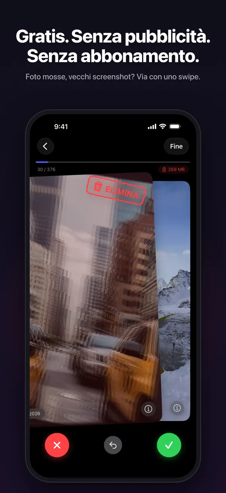
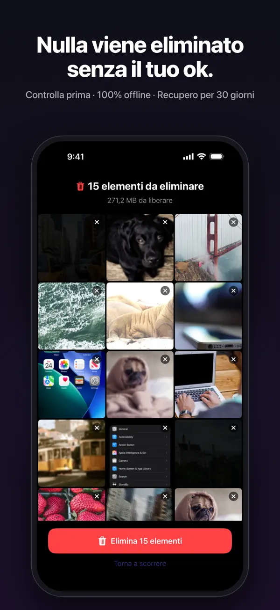
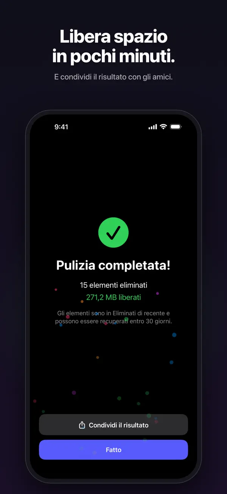

Scorri le tue foto.
Libera il tuo iPhone.
A sinistra elimini, a destra tieni. Gratis, senza pubblicità, senza abbonamento, e le foto restano sul tuo telefono.
Scarica su App Store



A sinistra elimini, a destra tieni. Gratis, senza pubblicità, senza abbonamento, e le foto restano sul tuo telefono.
Scarica su App Store


